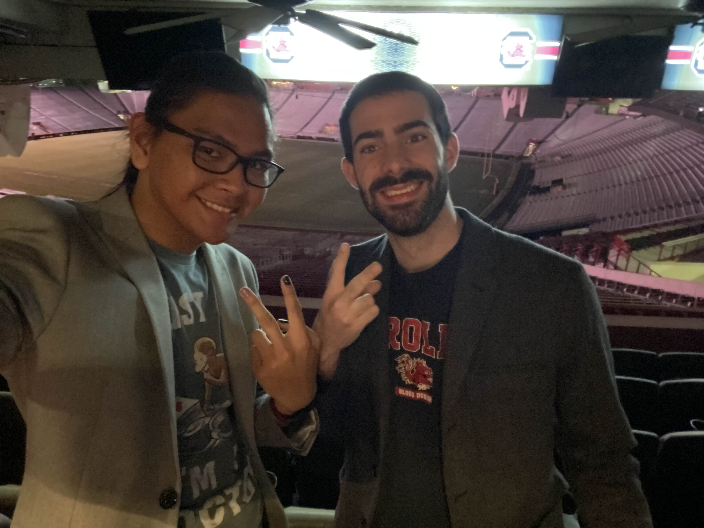
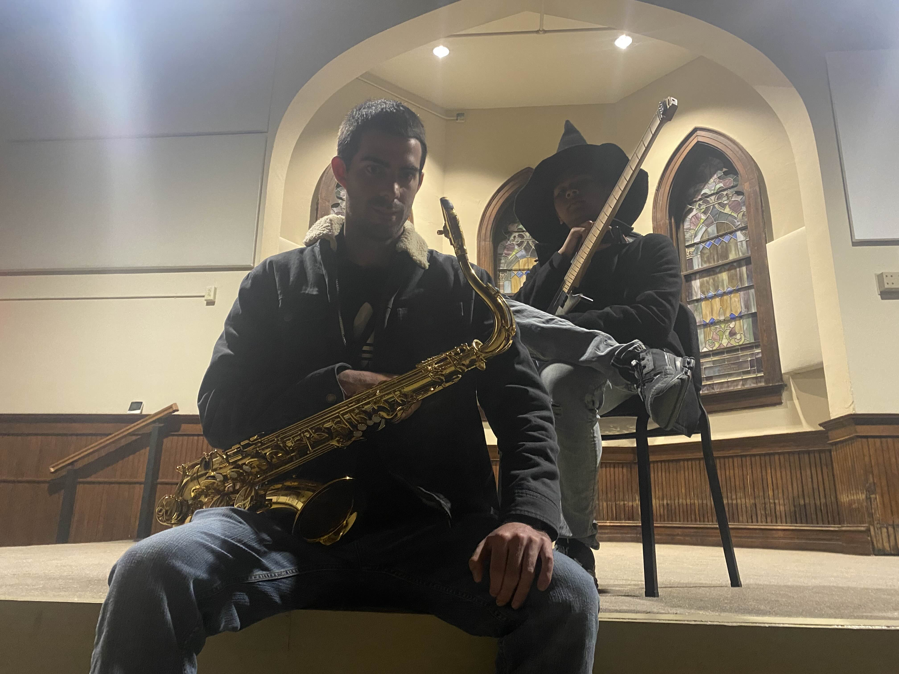
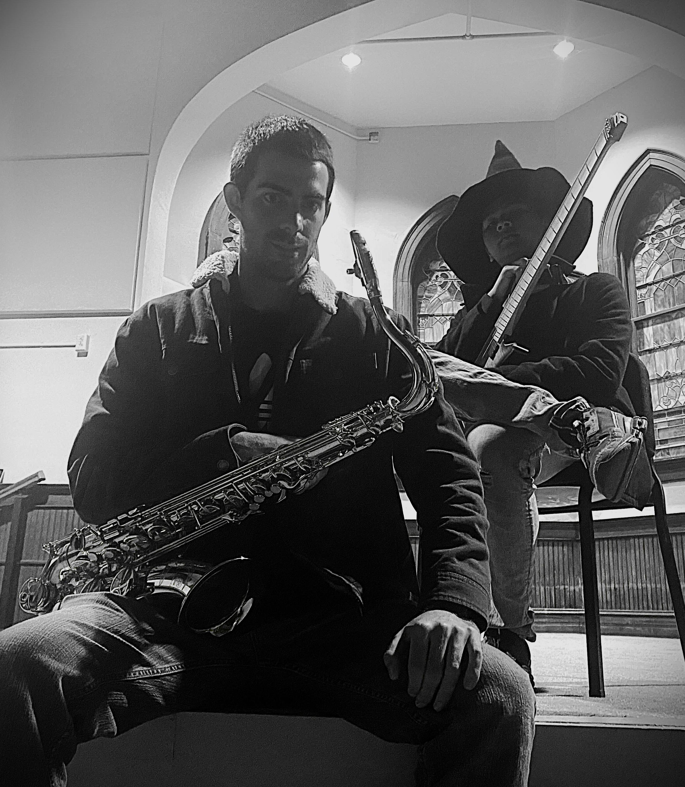
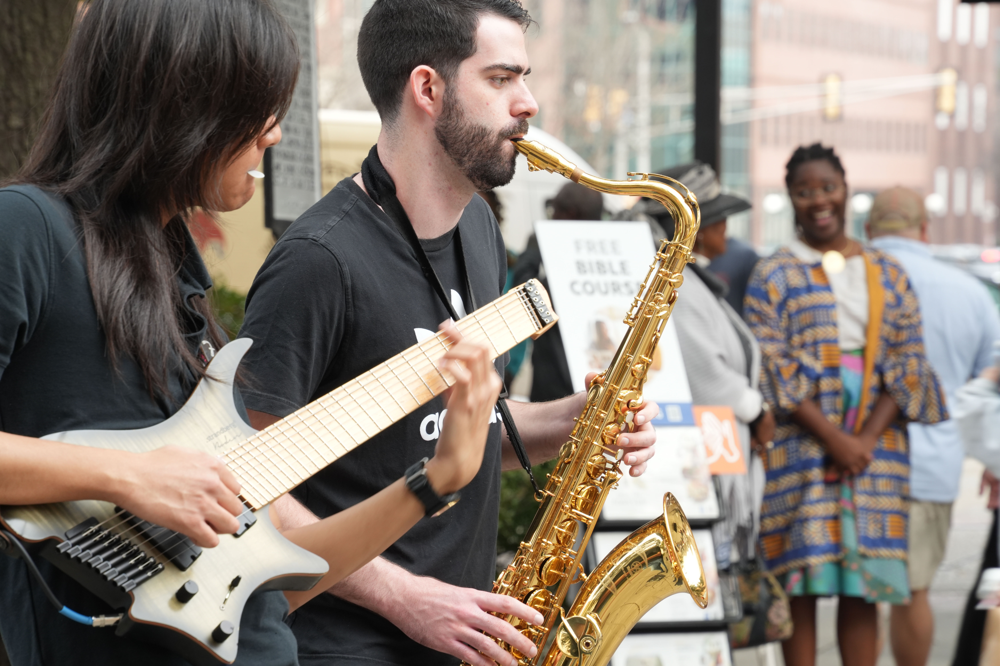

Wedding Cocktail Hour
Laid-back jazz for the transition between ceremony and reception, with a relaxed sound that gives guests something beautiful to settle into.


Warm jazz standards and requested tunes for ceremony transitions, cocktail hours, and elegant receptions.
Laid-back jazz for the transition between ceremony and reception, with a relaxed sound that gives guests something beautiful to settle into.


Saxophone, guitar, and bass textures for intimate receptions, outdoor patios, and refined rooms where the music should feel warm but never overpowering.
Couples can send requests in advance so the set feels personal while still keeping the easy cocktail-hour atmosphere.


Copyright The OJM Experience 2025. Why do your legs hurt on wednesday? Because leg day was Tuesday.